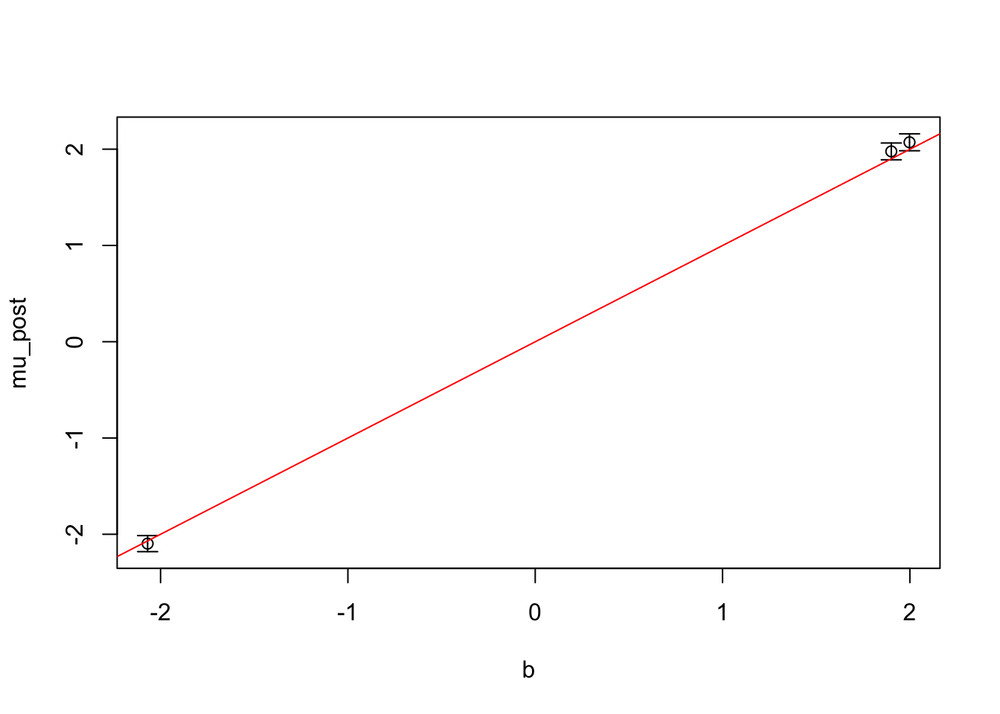
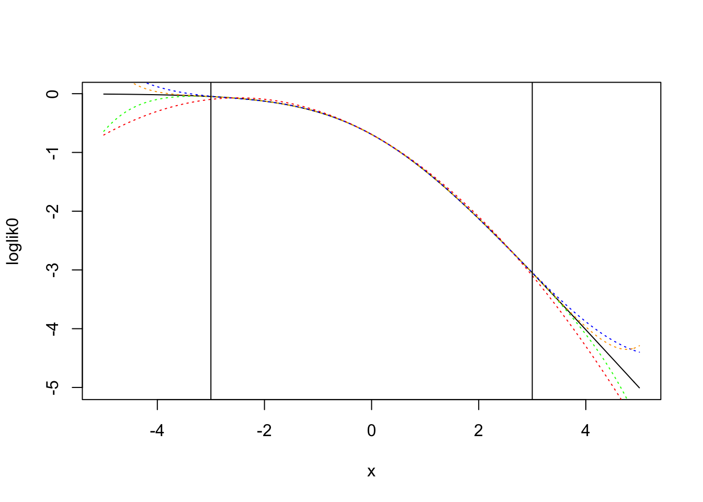

Rough implimentation of of approximate VB regression, where we approximate the data likelihood with a polynomial. We implement a mean field gaussian variational approximation. We demonstrate the method on Gaussian linear model (no approximation), and Bernoulli-logit (logistic regression) and Poisson-log (poisson regression) models with varying approximation degree.
Author
Karl Tayeb
Published
March 15, 2023
Code
library(dplyr)
Attaching package: 'dplyr'
The following objects are masked from 'package:stats':
filter, lag
The following objects are masked from 'package:base':
intersect, setdiff, setequal, union
Code
library(pracma)library(tictoc)
Attaching package: 'tictoc'
The following objects are masked from 'package:pracma':
clear, size, tic, toc
Code
set.seed(1)
Computation
Chebyshev approximations
Chebyshev polynomials can be used to approximate functions on the interval \([-1, 1]\) (and then also, on any finite interval). \(f(x) \approx \sum c_k T_k(x)\). We compute the coefficients of \(c_k\) for \(k = 0, \dots K\).
In the code below we use pracma::polyApprox which implement a scheme of evaluate the coefficients for \(f\). This is essentially done via quadrature.
Code
make_approximation <-function(f, R, n, plot=F){ p <-rev(pracma::polyApprox(f, -R, R, n =n)$p)if(plot){ S <- R +2 x <-seq(-S, S, by=0.1)plot(f, -S, S)lines(x, polyval2(p, x), col='red', lty='dotted')abline(v=-R); abline(v=R) }return(p)}
#' p coefficients of a polynomial in increasing order#' @param p polynomial coefficients in INCREASING dereepolyval2 <-function(p, x){pracma::polyval(rev(p), x)}#' f(x + c) = f2(x)shift_polynomial <-function(p, c){# construct map K <-length(p) -1 M <-matrix(nrow= K+1, ncol=K+1)for(j in0:K){for(k in0:K){ M[j+1, k+1] <-choose(k, j) * c**(k - j) } } coef_new <- (M %*% p)[, 1]return(coef_new)}# change back to original scale# f(bx) = f2(x)scale_polynomial <-function(p, b){ K <-length(p) -1 coef_new <- p *sapply(0:K, function(k) b**k)return(coef_new)}
Laplace approximation to polynomial
Code
#' convert (unnormalized) polynomial density to gaussian approximation#' p the coefficients of a polynomial in increasing order p = c(p0, p1, ..., pK)poly_to_gaussian <-function(p){ p <-rev(p) d <- pracma::polyder(p) d2 <- pracma::polyder(d)#f <- function(x){polyval2(p, x)}#mu <- optimize(f, interval = c(-100, 100), maximum = T)$maximum roots <-Re(pracma::polyroots(d)$root) mu <- roots[which.max(pracma::polyval(p, roots))] var <--1/ pracma::polyval(d2, mu)return(list(mu=mu, var=var))}
#' write gaussian log density as polynomial #' return a vector c representing polynomial c[3]x^2 + c[2] x + c[1]make_gaussian_coef <-function(y, var=1){c(-0.5* y**2/var, y/var, -0.5/ var)}
Code
#' q a p-list of distributions for effect size of each column#' X a n x p matrix of covariate#' returns a list(mu, mu2) with the means and second momentscompute_moments <-function(X, q){ p <-ncol(X) mu <-0 var <-0for (j in1:p){ mu <- mu + (X[,j] * q[[j]]$mu) var <- var + (X[,j]**2* q[[j]]$var) } mu2 <- var + mu**2return(list(mu=mu, mu2=mu2))}#' compute coeeficient for EXPECTED shift#' f2(x) = E(f(x + c))shift_polynomial2 <-function(coef, mu, mu2){ c <-list(1, mu, mu2)# construct map K <-length(coef) -1 M <-matrix(nrow= K+1, ncol=K+1)for(j in0:K){for(k in0:K){ M[j+1, k+1] <-choose(k, j) * c[[max(k-j+1, 1)]] } } coef_new <- (M %*% coef)[, 1]return(coef_new)}
Code
sublist <-function(list, j){ list[[j]] <-NULLreturn(list)}polynomial_update2 <-function(m, X, prior_p, q){ p <-length(q) n <-nrow(X)for(j in1:p){# compute moments# right now we just compute two moments, but need higher moments for # higher degree polynomials moments <-compute_moments(X[, -j, drop=F], sublist(q, j))# shift-- new polynomial in terms of \psi_j m2_tilde <-do.call(rbind, lapply(1:n, function(i) shift_polynomial2( m[i,], moments$mu[i], moments$mu2[i])))# scale-- new polynomial in terms of b_j m2_hat <-do.call(rbind, lapply(1:n, function(i) scale_polynomial(m2_tilde[i,], X[i, j])))# compute posterior polynomial m2_post <-colSums(m2_hat) + prior_p[[j]]# find gaussian approximation q[[j]] <-poly_to_gaussian(m2_post) }return(q)}
Example
Code
simulate <-function(n=500, p=2, lenghtscale =0.8, prior_variance=5){ Z <-matrix(rnorm(n*p), nrow=n) K <-exp(-(outer(1:p, 1:p, '-')/lenghtscale)**2) X <- Z %*% K b <-rnorm(p) *sqrt(prior_variance) y <- (X %*% b)[, 1] +rnorm(n)return(list(y=y, X=X, b=b))}sim <-simulate(p=3)y <- sim$yX <- sim$Xb <- sim$bprint(b)
Here we simulate a gaussian linear mode with three covariates. We plot the simulated effects against their posteror mean. It looks like we are able to recover the effects. Nice!
Code
plot_effect_posterior(q, sim$b)

Comparison to usual Bayesian computation
TODO
Logistic regression
Next we will take a quadratic approximation for logistic regression. We will also test higher degree polynomial approximations. In all cases we continue to use a Gaussian mean-field variational approximation. Computing the moments of the higher degree polynomials may be tricky, so we defer for now. However, if it can be done easily we may benefit from the richer varitional approximation (note: the Gaussian distribution is a degree 2 polynomial exponential family since it’s sufficient statistics are \(T(x) = [x, x^2]\))
Polynomial approximation to log likelihood
For each data point we want to approximate the log likelihood as a function of the linear predictor
Here we plot the \(\log p(y=0 | \psi)\) and it’s polynomial approximations of degree \(k=2,4,6,8\).
These polynomial approximations are generated using pracma::polyApprox which use the Chebyshev coefficients of an appropriately rescaled version of the function, to generate a polynomial approximation on the interval \([a, b]\). We generate approximations on the interval \([-R, R]\) where \(R = 3\).
Code
# loglike functions for y=1 and y=0loglik1 <-function(psi){ psi +log(sigmoid(-psi))}loglik0 <-function(psi){log(sigmoid(-psi))}# polynomial approximation via pracmaR <-3ll0_p2 <-rev(pracma::polyApprox(loglik0, -R, R, n =2)$p)ll0_p4 <-rev(pracma::polyApprox(loglik0, -R, R, n =4)$p)ll0_p6 <-rev(pracma::polyApprox(loglik0, -R, R, n =6)$p)ll0_p8 <-rev(pracma::polyApprox(loglik0, -R, R, n =8)$p)# note: ll0 and ll1 are just reflections over the x axis# so we can get ll1 by taking ll0_p2 and flipping the sign of the linear termll1_p2 <-rev(pracma::polyApprox(loglik1, -R, R, n =2)$p)ll1_p4 <-rev(pracma::polyApprox(loglik1, -R, R, n =4)$p)ll1_p6 <-rev(pracma::polyApprox(loglik1, -R, R, n =6)$p)ll1_p8 <-rev(pracma::polyApprox(loglik1, -R, R, n =8)$p)S <- R +2x <-seq(-S, S, by=0.1)plot(loglik0, -S, S)lines(x, polyval2(ll0_p2, x), col='red', lty='dotted')lines(x, polyval2(ll0_p4, x), col='blue', lty='dotted')lines(x, polyval2(ll0_p6, x), col='green', lty='dotted')lines(x, polyval2(ll0_p8, x), col='orange', lty='dotted')abline(v=R); abline(v=-R)

Approximate date likelihood
This just takes a whoe list of vector \(y\) and returns a matrix of coefficients
Code
#' get approximate polynomial representation of the data ybernoulli_poly_approx <-function(y, R, k){ n <-length(y) p0 <-make_approximation(loglik0, R, k)# for y=1 flip the sign of odd coefficients (note: 0 indexing) p1 <- p0 p1[seq(2, length(p0), by=2)] <- p1[seq(2, length(p0), by=2)] *-1 m <-matrix(nrow = n, ncol = k +1)for(i in1:length(y)){if(y[i] ==0){ m[i,] <- p0 } else{ m[i,] <- p1 } }return(m)}
Simulate logistic regression
Code
simulate_lr <-function(n=500, p=2, lenghtscale =0.8, prior_variance=5){ Z <-matrix(rnorm(n*p), nrow=n) K <-exp(-(outer(1:p, 1:p, '-')/lenghtscale)**2) X <- Z %*% K b <-rnorm(p) *sqrt(prior_variance) logits <- (X %*% b)[, 1] y <-rbinom(length(logits), 1, sigmoid(logits))return(list(y=y, X=X, b=b, logits=logits))}
Approximation with \(k=2\)
We can reuse our code above, substituting in new “data”, the coefficients for the polynomial approximation to the conditional likelihood.
We can check a few values of \(R\). There is a tradeoff here of course– the wider the interval we try to approximate, the worse the approximation will be. But if the interval is too narrow, the polynomial approximate likelihood essentially does not support data that fall far outside the interval. This is because we require the highest odd degree coefficient of our polynomial to be \(<0\) otherwise the likelihood grows unbounded outside the interval, and the approximation is not integrable.
Now we will extend our implementation above to handle higher degree approximations. This involves computing higher moments of the effect predictions, which isn’t too hard for Gaussian distributions.
Code
#' Make shift matrix#' #' Generate matrix that maps coefficients of a polynomial#' f(x + y) (represented by coefficients p) to coefficients of#' f2(x) = E_{p(y)}[f(x+y)]#' @param moments moments of ymake_shift_matrix <-function(moments){# construct map K <-length(moments) -1 M <-matrix(nrow= K+1, ncol=K+1)for(j in0:K){for(k in0:K){ M[j+1, k+1] <-choose(k, j) * moments[[max(k-j+1, 1)]] } }return(M)}#' Transform coefficients of a polynomial f(x + y) (represented by coefficients p)#' to coefficients of f2(x) = E_{p(y)}[f(x+y)]#' @param p K+1 coefficients of a degree-k polynomial#' @param moments moments of y (including E[y^0] = 1)shift_polynomial3 <-function(p, moments){ M <-make_shift_matrix(moments) p_new <- (M %*% p)[, 1]return(p_new)}compute_normal_moments <-function(mu, var, k){return(purrr::map_dbl(0:k, ~actuar::mnorm(.x, mu, sqrt(var))))}#' compute k moments for psi = xb, b ~ N(mu, var)compute_psi_moments <-function(x, mu, var, k){ normal_moments <-compute_normal_moments(mu, var, k) psi_moments <-do.call(cbind, purrr::map(0:k, ~ (x**.x) * normal_moments[.x +1]))}#' update q with polynomial approximation of arbitrary degreepolynomial_update3 <-function(m, X, prior_p, q){ K <-ncol(m) -1 p <-ncol(X) n <-nrow(X)for(j in1:p){ m_tilde <- mfor(k in (1:p)[-j]){ moments <-compute_psi_moments(X[, k], q[[k]]$mu, q[[k]]$var, K) m_tilde <-do.call(rbind, lapply(1:n, function(i) shift_polynomial3( m_tilde[i,], moments[i,]))) }# scale-- new polynomial in terms of b_j m_hat <-do.call(rbind, lapply(1:n, function(i) scale_polynomial( m_tilde[i,], X[i, j])))# compute posterior polynomial m_post <-colSums(m_hat) + prior_p[[j]]# find gaussian approximation q[[j]] <-poly_to_gaussian(m_post) q[[j]]$m_post <- m_post }return(q)}logistic_polynomial_approximation <-function(y, X, R, K=2){# observations in polynomial coeeficients m <-bernoulli_poly_approx(y, R, K) q <-list() prior_p <-list()for(j in1:p){ prior_p[[j]] <-c(c(0, 0, -0.5), rep(0, K-2)) # extend polynomial to agree with m q[[j]] <-list(mu =0, var=1) # initialize normal posterior }# iteratively update param_history <-list() param_history[[1]] <- qfor(i in1:50){ q <-polynomial_update3(m, X, prior_p, q) param_history[[i+1]] <- q }return(param_history)}
How does the posterior approximation change as we increase degree?
We approximate the likelihood on \([-10, 10]\) with \(K=2,6,10,14\). Note the polynomial approximation cannot be e.g. degree \(4\) because these polynomials are unbounded above (\(c_4 >0\)), so \(e^ \hat f(x)\) is not integrable over the real line. But \(c_K < 0\) for approximations of degree \(K = 2z + 2\) for \(z \in \mathbb N\).
In this example it seems that with \(K=2\) we tend to over-estimate the effect size, but this is resolved in the higher degree approximations.
In the above implementation we compute a polynomial proportional to the posterior density, but reduce this to a Gaussian approximation by taking a Laplace approximation.
That is we want to compute
\[
\mathbb E [b^j] = \int_{\mathbb R} b^j q(b)
\]
Which we approximate by
\[
\mathbb E [b^j] \approx \int_{\mathbb R} b^j q_{\text{gauss}}(b)
\]
Where \(q_{\text{gauss}}\) is the Gaussian distribution that minimizes the divergence to \(q_{\text{gauss}} = \arg \min_{q_g} KL(q_g ||q)\).
It would be better if we could compute the moments of \(q(b_l) \propto \exp\{\sum_k \eta_k b_l^k\}\). We define the log normalizing constant \(A({\bf \eta}) = \log \int \exp\{\sum_{k=0}^K \eta_k b_l^k\} db\). Let \(f(b) = \sum_{k=0}^K \eta_k b^k - A(\eta)\) so that \(q(b) = \exp\{f(b)}\).
Because \(q\) is in an exponential family, we know that \(\nabla_{\eta} A(\eta) = \mathbb E[T(x)] = [1, \mathbb E[b], \mathbb E[b^2], \dots, \mathbb E[b^K]]\). Is there an easy way to compute the gradient of \(A\)?